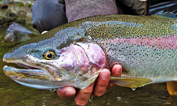
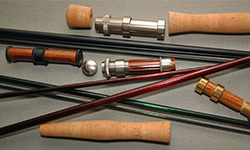

Trout Hatchery

The TRAA trout hatchery is a popular activity of the TRAA as it's a great teaching tool with regard to the life cycle of a trout. Those involved with the hatchery get to see firsthand the development stages of the egg and the fry before their final release destinations to area streams.
Volunteers attend to the operation every day to maintain the health and well-being of the trout. As the saying goes, many hands make light work.
There are ideally 2 members assigned for each day of the week. This is desirable as they can cover for each other and also allows us to match up anyone wanting to "learn the ropes" with an experienced mentor.
At this time there are still openings those wanting to be a part of the trout hatchery rotation. You can Contact Us or attend a TRAA General Meeting (see above) for more info.
Rod Building

This will be a series of informal, hands-on sessions that will result in a spinning or fly rod that you have assembled and finished yourself.
This opportunity is open only to current members of the TRAA, WOFGPA and/or FCFFC. Registration will be closed when 15 paid-up participants have registered, or January 11, 2019, whichever comes first. An email with further details has been sent out. If you haven't received this email by Wednesday, December 19th, please Contact Us.
Presented by: Thames River Anglers Association with the Western Ontario Fish & Game Protective Ass’n and the Forest City Fly Fishing Club.
The Western Ontario Fish & Game Protective Association clubhouse is at 790 Southdale Road, London Ontario.